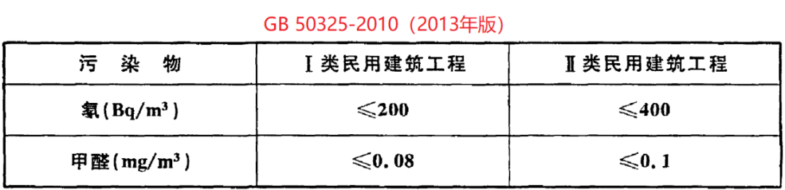
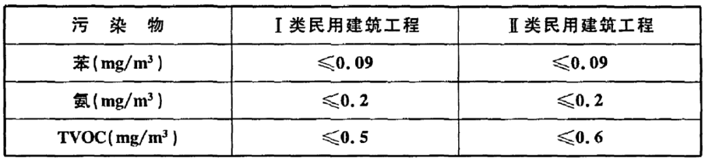
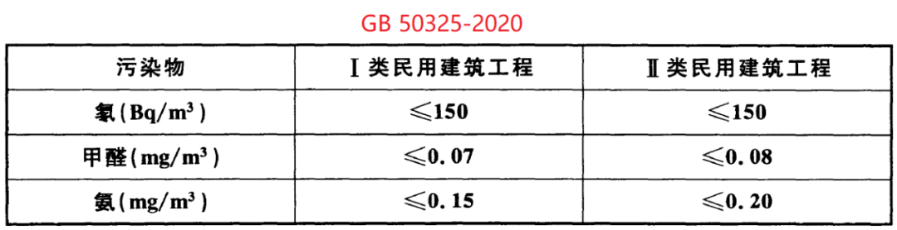
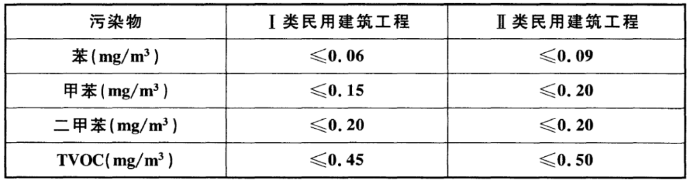
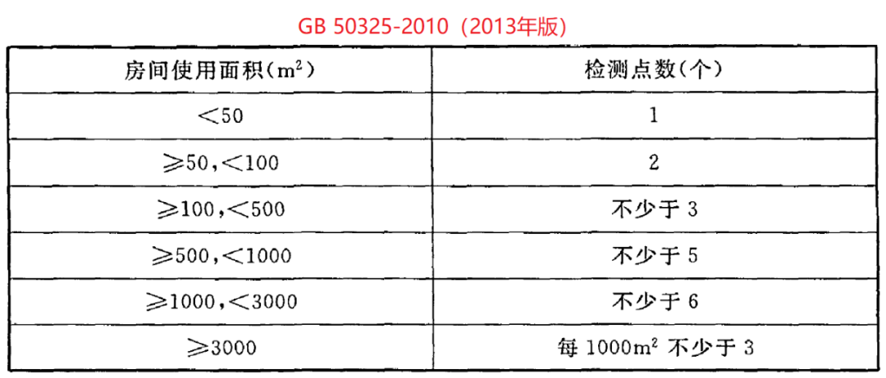
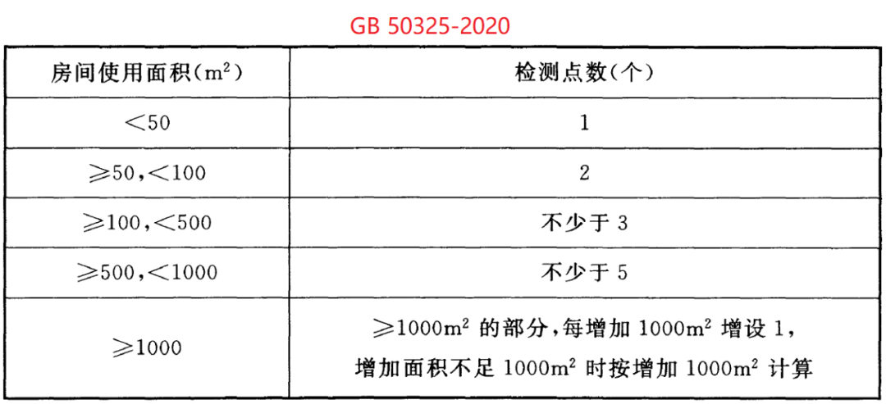
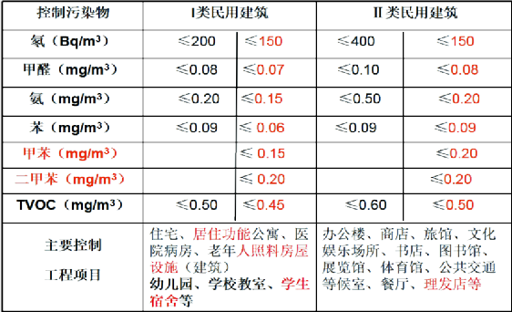

8月1日起，史上最严室内环境标准实施！甲苯和二甲苯被列入室内空气污染物
史上最严室内环境标准新版《民用建筑工程室内环境污染控制标准》（GB 50325-2020）8月1日起实施，室内空气中污染物增加了甲苯和二甲苯，并对部分材料的污染物含量（释放量）限量及测定方法进行了调整。对自然通风的Ⅰ类民用建筑的最低通风换气次数提出具体要求，并对幼儿园、学校教室、学生宿舍等装饰装修提出了更加严格的污染控制要求。
本次《民用建筑工程室内环境污染控制标准》修订，不仅对全社会高度关注的学校、幼儿园的室内环境污染、室内环境家具污染等室内环境污染热点问题进行了科学的规范和指导，而且对后疫情时代，保护人民群众的室内环境生命安全和身体健康，促进我国室内车内环保产业发展具有重要意义。
四大变化
01 更严
这次标准修订的一大特点是室内环境质量要求更严。一方面，新修订的标准中大部分污染物浓度限值比GB 50325-2010（2013年版）要严格，部分污染物浓度限值甚至比《室内空气质量标准》（GB/T 18883-2002）还要严格，比如Ⅰ类民用建筑工程的甲醛污染从原来的0.08mg/ｍ³修订为0.07mg/ｍ³；另一方面，对全社会高度关注的幼儿园、学校教室、学生宿舍、老年人照料房屋设施室内装饰装修验收时，规定室内空气中氡、甲醛、氨、苯、甲苯、二甲苯、TVOC的抽检量不得少于房间总数的50%，且不得少于20间，当房间总数不大于20间时，应全数检测。




02 更多
室内空气中污染物控制的种类增多了。GB 50325—2010（2013年版）中室内空气污染物验收检测一共有5种指标（氡、甲醛、苯、氨、TVOC），这次修订在GB 50325—2010（2013年版）的基础上增加了甲苯和二甲苯的检测指标，一共是7种污染物测试。实际上加上氡污染从过去的一种氡-222，增加到两种氡-222和氡-220，还有室内环境新风量的测试，一共是9种指标。
03 更高
这次修订对室内环境质量要求更高，不仅是化学污染问题，而且关注室内环境的放射性氡污染，关注改善室内空气品质的新风量问题，关注通过进行室内环境预评价和严重污染环境的有害物质控制，有效解决装饰装修和家具污染问题。对室内污染物浓度检测点数设置进行了调整，本标准中调整了使用面积大于1000 m²的房间检测点数设置。


04 更强
这次修订对室内环境检测实验室的能力要求加强了，特别是在一些室内环境污染物的检测方法方面。室内环境甲醛检测明确了采用AHMT分光光度法，提高了甲醛检测的稳定性和可靠性；明确了室内空气中氡浓度检测采用泵吸静电收集能谱分析法、泵吸闪烁室法、泵吸脉冲电离室法、活性炭盒-低本底多道γ谱仪法四种方法；增加了苯系物及挥发性有机化合物（TVOC）的T-C复合吸附管取样检测方法。一方面，完善并细化了室内空气污染物取样测量要求；另一方面，对室内环境检测实验室的测试仪器和测试人员的能力和水平要求进一步加强。

五大影响
01
标准名称由《民用建筑工程室内环境污染控制规范》变为《民用建筑工程室内环境污染控制标准》，标准中重申“室内环境污染物浓度检测结果不符合本标准规定的民用建筑工程，严禁交付投入使用”。按照国家产品质量法的要求，产品质量不符合强制性国家标准要求的，属于不合格产品。特别是如果室内环境质量不合格，会对人体健康造成伤害。
02
考虑到室内环境中的污染物叠加污染，加严新建工程和新装修工程的室内环境污染控制指标，为消费者居住增加家具等用品提供更多的承载空间，意味着装饰装修以后室内环境不合格的比率会增加。
03
室内环境检测环节要求更加严格，包括固定家具保证正常的使用状态及可移动家具的配置和使用；特别是对精装修房屋和全包圆的装饰装修，如果室内环境污染控制不好，室内环境中的污染物指标就不合格，导致产生投诉的风险会比较高。
04
考虑到室内环境污染与室内环境通风的关系，室内环境测试时需要测试室内新风量；对于安装了新风机和新风设备的室内环境，可以保证室内环境质量达标。
05
考虑到近年来幼儿园、学校教室的装饰装修污染问题引起社会广泛关注，标准中提出更加严格的要求。在选用建筑装饰装修材料时，要求对不同产品、批次的人造木板及其制品的甲醛释放量、涂料、橡塑类合成材料的挥发物释放量进行抽査复验。对新建、新装修和使用新家具的学校、幼儿园的室内环境更加关注，要求新建学校交付使用前抽检室内由原来的5%增加到50%，20间以内的要求全部进行检测。
五大促进
01 对室内环境检测服务产业的影响
进一步推动室内环境检测实验室的发展，污染物测试条件和方法的更强要求和学校、幼儿园50%抽检比例的确定，使室内环境检测实验室的工作量会大幅度提高，第三方工程质量检测验收将可能会成为新的蓝海；会大大促进智能检测室内环境检测仪器的开发，促进检验检测技术的进步，促进方便快捷的检验检测设备和仪器的研发推广，促进检验检测人员的岗位培训和检验检测技能的提高。
02 对室内环境净化服务产业的影响
标准首次规定民用建筑工程室内环境检测不合格可以进行整改，把室内环境净化作为工程施工的一部分，将有利于室内环境净化材料的发展和推广，为室内环境污染净化服务的推广、室内环境净化技术的提高创造了发展空间。同时，由于室内环境污染控制指标加严，对于室内环境净化材料和具有室内环境净化功能的装饰装修和家具材料的发展，都会起到有力的推动作用。
03 对绿色环保装饰装修材料和家具产业发展的影响
标准中强调，工程验收需要配置固定家具和移动家具，同时考虑验收时的指标加严、测试项目增加，会倒逼新型环保无污染的装饰装修材料和无甲醛的塑料家具、铝家具和木塑材料的发展。标准中特别提出，木塑材料代替传统的人造板材料，可以有效地解决人造板甲醛污染问题。实际上，这两年新兴的无甲醛人造板、以塑代木、全铝家居等材料都会为解决室内环境污染提供支持，特别是在学校、幼儿园中，在生态校园建设中起到积极的推动作用。
04 对绿色环保装配式装饰装修工程的影响
考虑传统装饰装修中的室内环境污染问题，标准中提出了加强室内环境预评价的要求，特别是提出控制室内装饰装修污染的关键措施是严格控制装饰装修材料使用量负荷比、控制材料污染物释放量，以及保持必要的通风换气量。同时提出大力推广低碳、环保、无污染、少污染的装配式装修工程，促进我国建筑装饰装修行业的工厂化、标准化、集成化、模块化的装饰装修材料的现场装配式装修。
05 对室内环境新风机和净化器产业发展的促进
一方面，标准中提出室内环境污染与室内新风量相关联的概念，提出提高室内空气质量品质的新要求，编制说明中还提出通风措施大体可分为主动式和被动式两类，主动式通常为机械送、排风系统，被动式可采用自力式排风扇或无动力通风器等，无动力通风器可选用窗式通风器、外墙通风器等形式。另一方面，严格的室内空气质量标准要求建筑装饰装修工程在设计中、二次装饰装修的改造中，或者在一些室内空气质量要求严格的学校、幼儿园建筑中，设计、配置和安装新风系统，保证室内空气质量达标。
原文编辑: EHS资讯
原文链接: https://ehsinfo.cn/2020/08/02/民用建筑工程室内环境污染控制标准.html
版权声明: 转载请注明出处(必须保留作者署名及链接)